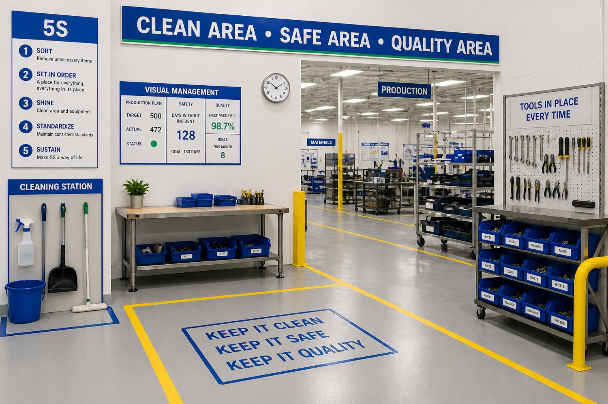

Lean Six Sigma Belts
White, Yellow, Green and Black Belt learning paths for different levels of responsibility.
Courses and learning programs

Choose self-paced courses, live online workshops or corporate training for business teams and employee groups.
Programs
White, Yellow, Green and Black Belt learning paths for different levels of responsibility.

Practical modules for seeing waste, improving workplace organization and creating better routines.

Quality tools for problem solving, analysis and process control in real work settings.

Tool-based training for teams that need a broader improvement toolkit.

Online or in-person sessions for teams that need guided discussion and hands-on practice.

Custom programs for business teams, departments and employee groups.